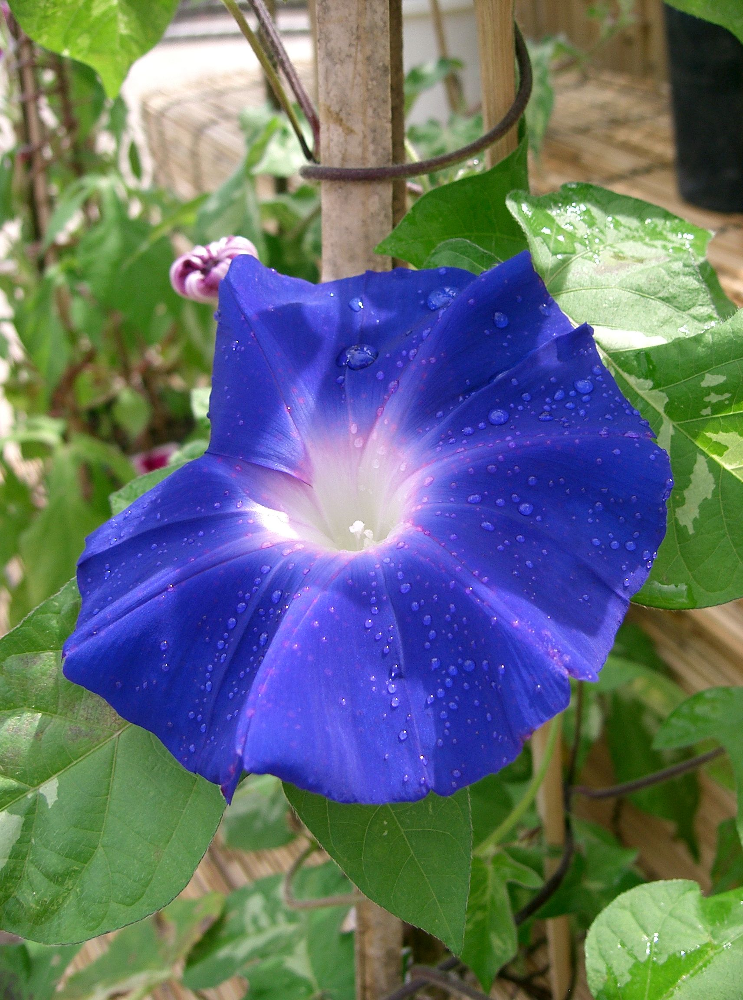

アサガオ

アサガオ（朝顔、牽牛花、学名: Ipomoea nil [1]、英: Morning glory）は、ヒルガオ科サツマイモ属の一年性植物。日本で最も発達した園芸植物。古典園芸植物のひとつでもある。中国語で牽牛。日本では「蕣」の漢字も当てられる。
特徴としてつる性で葉は広三尖形で細毛を有する。
花は大きく開いた円錐形で、真夏に開花する。1つの花は，外側からがく5、花弁5(1)、おしべ5、めしべ1を有する。5枚の漏斗状の花弁は融合し、漏斗状になっている。それぞれの花弁の中央に、放射状の中肋（アサガオでは特に「曜」と呼ばれる）が走っている。子房は3つの子房室からなり、各子房室には2つの胚珠がつくられる[2]。
(引用:wikipedia url:
https://ja.wikipedia.org/wiki/%E3%82%A2%E3%82%B5%E3%82%AC%E3%82%AA
)